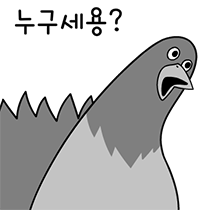
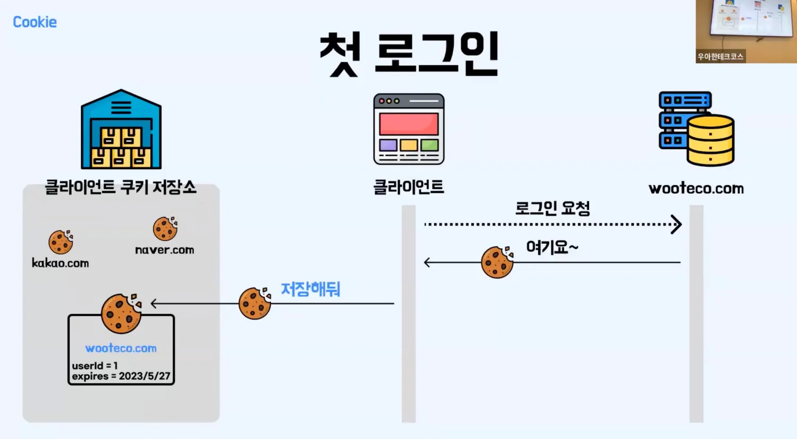
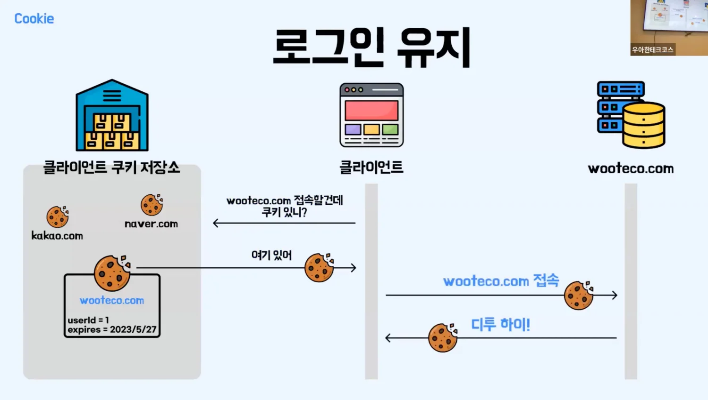
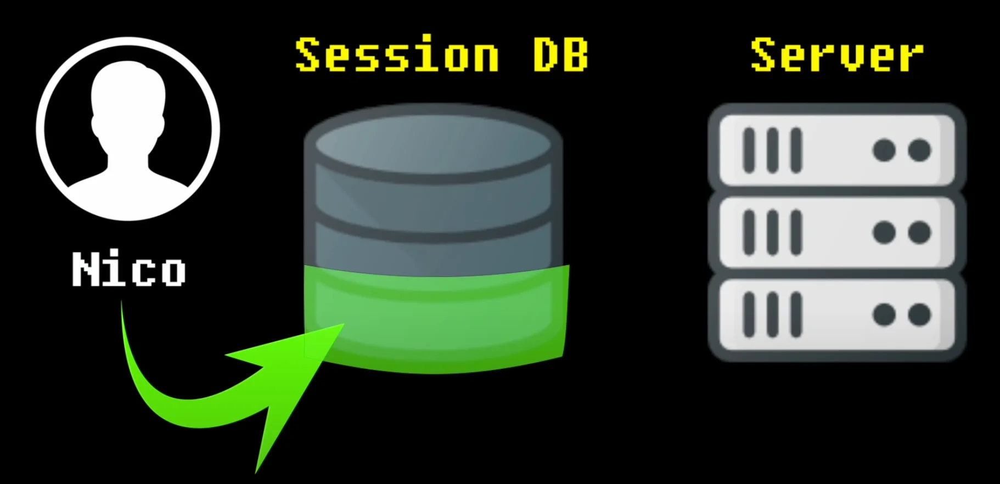
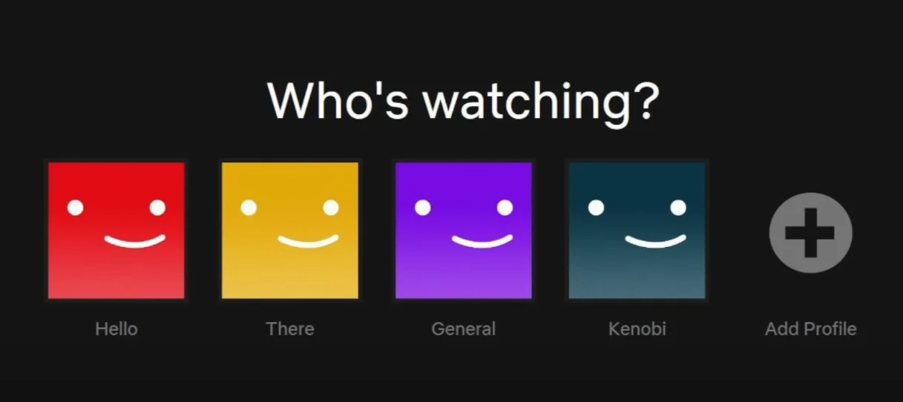
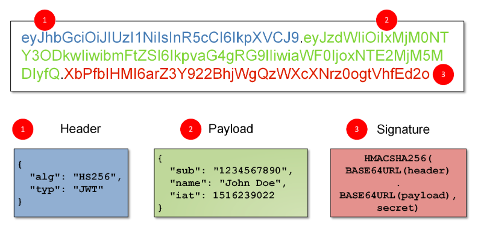

Web Auth & Security 🕵🏻♂️ Part.1
- 안녕하세요, PETER입니다.👋 오늘은 FullStack 개발을 하게되면 피할 수 없는 숙명인 Cookies, Session, Token에 대해서 정리해볼게요. 2편에서는 각각의 보안 취약점 및 대응방안에 대해서도 알아보겠습니다.😎
- 개발자라면 누구나 들을 수 밖에 없는 이녀석들. 왜 필요하게 됐는지부터 설명해볼게요!👨🏫
0. Backgrounds 👀
Stateless HTTP
웹서비스를 구성한다고 하면 기본적으로 Server와 Client라는 개념이 생기죠. Client는 Server에게 데이터를 요청(Request)하고, Server는 응답(Response)을 해주는 구조입니다. 🔁
이렇게 Server와 Client는 HTTP 통신으로 데이터를 주고 받게 되는데요, HTTP는 기본적으로 Stateless 입니다. 문자그대로 상태(State)가 없습니다(less). 즉, 누가 누구인지 기억을 못한다는 거죠.
 HTTP는 기억력이 없는 새대갈과 같다요청이 없을 때도 서버가 계속 모든 클라이언트와 연결을 유지한다는 것은 비효율적입니다! 연결이 될 때마다 서버의 자원(=메모리)를 사용하는데, 유저가 많아질수록 모든 유저의 정보(요청ip, 아이디, 비밀번호 등)를 서버가 가지고 있으면 서버의 비용과 부담을 증가시키기 때문이죠.🥲
그래서 HTTP 통신은 하나의 요청은 하나의 응답 후 연결을 끊습니다. 즉, 같은 Client가 몇 번이고 요청을 해도 각각을 별개의 Request로 보고 응답(Response) 할 뿐이라, 받은 Request가 어느 Client로부터인지 알 수 없습니다.
Authentication 🔐
- 그렇다면 분명히 Client 입장에서는 로그인을 했는데, 서버가 누구인지 모르니까 매번 로그인을 새로 하라고 한다면..? 😱 네, 그런 일이 일어난다면 서비스가 제대로 제공될 수 없겠죠.
- 그래서 서버에 요청을 할 때마다, 이미 인증(Authentication)이 끝난 사용자임을 증명할 신분증 같은 녀석들이 필요한데, 그게 바로 Cookies, Sessions, Tokens 되시겠습니다.😎
1. Cookies 🥠
쿠키는 🍪가 아니라, 포춘쿠키라고 알려진 🥠를 떠올리면 좋을 것 같아요! 클라이언트에 대한 정보(=데이터)를 쿠키에 넣어서 서버와 클라이언트가 주고 받거든요.😉
메세지가 담겨있는 Fortune Cookie
🥠’s Properties
쿠키는 아래와 같은 특징이 있어요.
- ‘서버가 보내준’ 쿠키는 클라이언트의 브라우저(Browser)에 저장된다.
- 클라이언트가 다시 서버에 요청할 때, 브라우저가 받은 쿠키를 그대로 다시 서버로 보내준다.
- 각 Host(=방문한 도메인) 별로 별도의 쿠키가 저장된다.
(e.g. YouTube 쿠키는 YouTube 웹페이지에만 저장) - 쿠키는 서버가 정해준 유효기간이 있다.
1번과 2번 특징을 잘 생각해보면, 쿠키를 사용해서 어떻게 인증이 이루어지는지 알 수 있어요.🙂
Cookie를 사용한 인증 순서
Client🧑🏻💻가 최초 1회 접속한 웹페이지에 대한 데이터를 달라고 서버🖥️로 요청(Requset)을 할 때는 그냥 요청만 합니다. 받은 쿠키가 없으니까요!
이 때, 서버는 응답(Response)를 하면서 쿠키를 함께 넣어서(+🥠) Client에게 보내줍니다. 이 쿠키 안에는 ‘로그인한 사용자(key) - Peter(value)’와 같은 메세지가 있다고 편의상 생각해보죠. 이 메세지를 Client는 브라우저 쿠키 저장소에 저장합니다.(1번 특징)
 Source - 디투의 쿠키와 세션그 다음 다시 똑같은 페이지를 재방문하게 되면, 브라우저는 저장된 쿠키🥠를 그대ㅐㅐ로 넣어서 서버에게 요청(Request)합니다.(2번 특징) 그럼 서버는 받은 Request의 쿠키🥠 안에 있는 정보를 보고 ‘오 저번에 왔던 녀석이군!’하고 인지하게 되는거죠!
 Source - 디투의 쿠키와 세션
Cookie는 운송수단! 🚃
- 또한 중요한 사실은, 쿠키는 인증 정보 외에도 여러가지 정보를 저장할 수 있다는 것! 예를 들면, 사용하고 있는 웹사이트에서 언어설정을 영어로 설정했다면, ‘언어 - 영어’라는 쿠키를 클라이언트에게 서버는 전달할거고, 클라이언트는 브라우저에 저장해요.
- 로그인을 하지 않았는데, ‘오늘 이 창을 보지 않기’, ‘장바구니에 상품 넣어두기’ 이런 기능들도 쿠키를 사용하면 가능해집니다.😎 장바구니에 무엇을 담았는지 Client 브라우저에 저장하고, ‘오늘 이 창을 보지 않기’를 클릭했다는 사실도 사용자가 사용 중인 브라우저에 저장해놓으면 되니까요!
- 아래에서 소개할 Session의 ID도, Token도 이 쿠키에 넣어서 서버가 브라우저에 보내주기도 해요! 즉, 쿠키는 인증에만 사용하는 것이 아니라, 서버와 클라이언트 간의 정보를 key-value 형태로 전달해주는 Transportation(운송수단) 이라고 생각해주시면 좋을 것 같아요!
2. Sessions 🚪
세션은 Session DB를 활용해 Client가 누구인지 기억합니다! 아래 그림과 같이 말이죠.
한 번 사용자가 로그인을 하면, 서버는 Session DB에 사용자의 Session ID를 만들고, 생성한 Session ID를 쿠키🥠를 통해 브라우저에 전달되고 Session DB에도 저장해요.
 로그인하면 Session ID를 생성그렇기 때문에, 다시 Client에서 이전에 받은 Session ID 쿠키🥠를 그대로 Request와 함께 Server에 전달하면, 서버는 해당하는 Session ID가 Session DB에 이미 존재하는지 확인👀하고, 있다면 인증된 사용자 임을 기억하게되는 방식입니다.
Session은 서버가 별도의 Session DB를 필요로 하기 때문에, 유저가 늘어나면 DB도 커져야하는 부담이 생길 수 있습니다. 이를 위한 DB로 보통 redis를 많이 써요. 세션의 유무만 판별하면 되는 이런 경우에 빠르고 저렴하게 역할을 잘 해내거든요.
Session의 Fancy한 기능!
- Session DB를 따로 만들어서 관리해야한다는 것은 참 비용이라는 현실적인 문제에 봉착할 수 밖에 없는데요, 그럼에도 같은 ID로 접속 중인 Session 파악하고 싶다거나, ‘서로 다른 Device에서 로그인 되어있는 계정 강제 로그아웃 시키기’와 같은 멋진 기능✨들을 사용하고 싶다면, 세션을 사용해야합니다.
 - 넷플릭스 같은 서비스에서 경험해보신 적이 있으실 거에요. 같은 ID를 공유하고 있는 세션을 Session DB에서 파악하면 가능해지죠.
- 현재 내가 사용하고 있는 Device의 Session을 제외한, 같은 id를 사용하고 있는 Session들을 Session DB에서 모두 삭제해버리면 ‘다른 곳에서 로그인 된 계정 강제 로그아웃 시키는 것도 간단하게 가능해집니다.🤗
3. Tokens 🎫
- 토큰은 기본적으로 아주 긴 String의 형태를 띄고 있습니다. 그리고 위에서 살펴본 쿠키 + 세션 기반 인증 방법과 아주 유사한 로직으로 사용됩니다.
- 사용자가 로그인하면 서버가 토큰을 생성하고, DB나 서버 메모리에 저장해둡니다.
- 사용자는 이후 요청할 때 이 토큰을 포함해서 보내고,
- 서버는 해당 토큰이 유효한지 DB나 메모리에 저장한 목록에서 확인합니다.
그럼 토큰을 굳이 왜 쓰는거지..?🤔
- 라는 질문이 들 수 있겠죠? 간단하게 말씀드리면 모바일📱환경 때문이라고 생각하셔도 좋을 것 같네요! 모바일의 Native App에서는 ‘쿠키를 자동으로 처리해주는 브라우저가 없거든요!’ 근데, 바로 여기서 토큰의 진화버전(?)인 JWT가 등장합니다!
암행어사 출두요! JWT 두둥 등장! 💫
JWT은 신분증이다! 생각하시면 좋을 것 같아요. 세션처럼 따로 Session DB를 관리할 필요없이, ‘보여만 주면’ 바로 인증할 수 있는 아주 편리한 녀석이죠. 암행어사의 마패같이요.
이 사람이 누군지 안다면.. 연대측정 가능..JWT는 Json Web Token의 약자로, 아래와 같은 특징으로 많은 각광을 받고 있어요.
- JWT 토큰 자체 인증이 가능하다. 👉 서버의 Session DB 조회가 필요없다.
- 토큰은 서버에서 조작된 토큰인지 위변조 여부를 확인할 수 있다.
어떻게 이런 특징을 가질 수 있는지 알아볼게요.🪄 JWT는 아래와 같이 총 세 부분으로 구성돼요!
 JWT 구조
header
- header에는 마지막 요소인 signature에서 사용할 암호화 알고리즘(HS256, RS256, 등)은 어떤 방식인지 정보와, Token의 Type을 적어놨어요. JWT의 경우 당연히 Type은 “JWT”가 됩니다.
payload
- payload에는 현재 로그인을 요청하는 사용자와 관련된 데이터가 들어가 있어요. 위 그림과 같이 이름이 될 수도 있고 다른 정보가 들어갈 수도 있습니다.
signature
- JWT의 꽃🌷은 signature입니다. Signature의 영어단어 뜻 그대로, 서버는 Header와 Payload에 자신만 알고 있는 Secret Key를 더해서 암호화를 함으로써 서명하기 때문이죠. 암호화는 header에 적혀있는 방법으로 암호화를 했겠죠?
각각의 세 부분은 base64 인코딩이 되어, 위의 JWT 예시 사진과 같이 엄청 외계어 같은 문자열로 바뀌게 됩니다. base64는 binary를 Text으로 바꿔주는데, 아래와 같이 Text를 못알아보게 만들기도 해요.
- txt
base64 인코딩 전 - Hello World :)
base64 인코딩 후 - SGVsbG8gV29ybGQgOik=
중요한 포인트는 복호화도 인코딩만큼 쉽다는 건데, header와 payload는 base64 디코딩을 하면, 너무 쉽게 어떤 내용이 들어있는지 알 수 있다는 점이에요. 그래서 비밀번호 같이 중요한 데이터는 Payload에 절대로 넣으면 안됩니다.🙅🏻♂️
어째거나 이런 방식 덕분에, 혹시 누군가 Token의 header나 payload를 위변조 한다 하더라도, 서버만 가지고 있는 Secret Key가 유출되지 않는한, 위조된 데이터로 암호화를 했을 때 서버가 서명했던 signature와 다른 값이 나오기 때문에, 쉽게 위조됐는지 여부를 파악🕵🏻♂️할 수 있게 됩니다.
JWT의 Trade-off 🤝
- 그렇기 때문에 서버는 payload의 정보가 위조되지 않았다는 것을 인증(Auth)함으로써 Session DB를 찾는 과정이 필요없게되고, payload의 내용으로 사용자가 누구인지 알 수 있게 됩니다. 👍
- 이처럼 Session DB가 필요없다는 것은 분명한 장점이지만 Session DB가 없기 때문에 위에서 함께 살펴보았던, Session의 fancy한 기능들(강제 로그아웃, 세션 관리)은 사용할 수 없게 됩니다! 결국 다 Trade-off인 것이겠죠?💁♂️
- 여기까지, Token, Session, Token, 그리고 JWT까지 함께 알아봤습니다! 조금이라도 각각의 개념을 이해하는데 모쪼록 조금의 도움이라도 됐으면 좋겠네요!🙏
- 그럼 Web Authentication 2편에서는 Token, Session, Token을 해킹하거나 악용하려는 공격은 어떤 것들이 있는지 함께 알아보도록 하겠습니다. :)
읽어주셔서 감사합니다!🙇🏻♂️
References